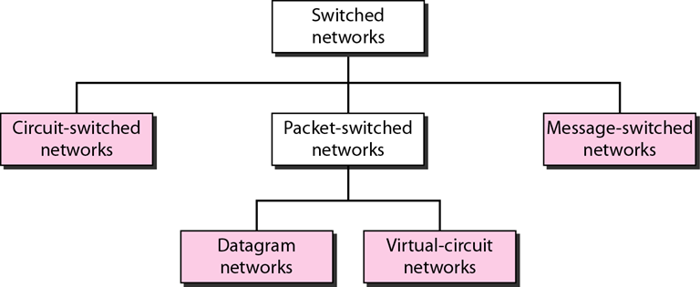
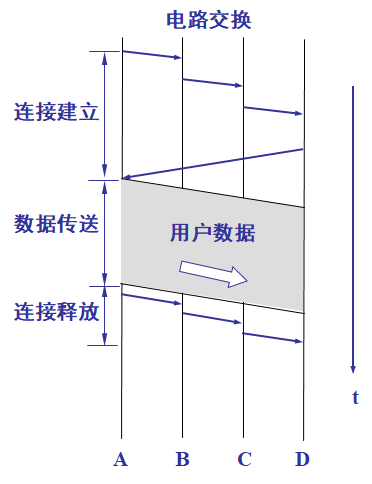
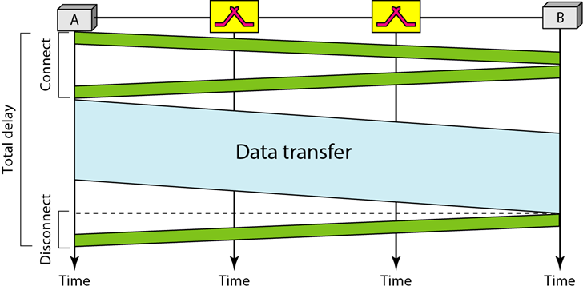
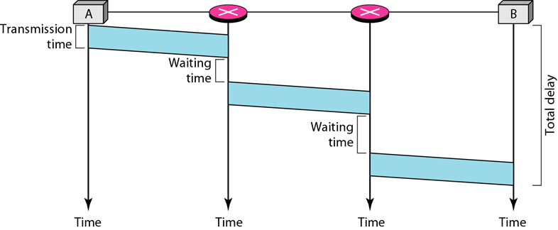
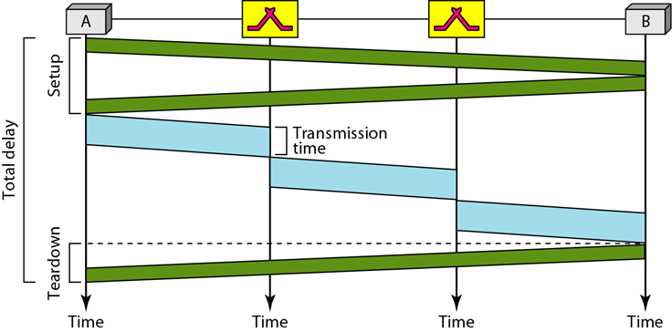

第8章 交换(传输时延分析)
交换网分类法：

一. 电路交换的概念
- 概念：
- 由物理链路连接的一组交换机组成。
- 两个站点的连接是由一条或多条链路组成的专用路径来实现。每次连接仅使用每条链路上的一专用通道。
- 通常每条链路用FDM或TDM划分成n个通道。
- 电路交换是在物理层。
- 电路交换网络由物理链路连接的一组交换机组成，每条链路被分成了n个通道。
- 在电路交换中，建立阶段必须预留资源，以作为整个数据传输间的专用资源直到拆除阶段。
- 通信开始前，站点必须对通信时间所用的资源给以预留。
- 两个站点之间数据传输不打包（物理层传输信号）。
- 数据传输期间没有寻址，交换机基于它们占有频带（FDM）或时隙（TDM）发送数据。在建立阶段，存在端到端的寻址。
- 传统电话网物理层的交换采用电路交换方法。
三个阶段
连接建立阶段
- 连接建立是交换机之间建立一些专用通道
- 端到端系统的寻址要求建立两个端系统之间的连接。
数据传输阶段
拆除阶段

延迟

二. 数据报交换的概念
- 概念：
- 分组不存在资源预留。链路没有预留的带宽，以及对每个分组没有安排预定的处理时间。
- 资源按需分配，基于先来先服务的原则。
- 每个分组独立处理，与其他分组无关。
- 在分组交换网中，不存在资源预留，资源按需分配
- 数据报交换通常是在网络层。
- 传统上称数据报网中的交换机为路由器
- 因特网在网络层用数据报方法对分组进行交换。
路由表
- 数据报网中的交换机使用基于目的地址的路由表。
- 数据报网分组的头部中的目的地址在分组传送期间保持不变。
延迟
下图中 总延迟时间 = 3个传输时间 + 3个传播延迟 + 2个等待时间

三. 虚电路交换的概念
- 是结合电路交换网络与数据报网络的产物
- 特征：
- 在数据传输阶段，如同电路交换网络一样有建立阶段与拆除阶段。
- 同电路交换网络或数据报网络一样，按需在建立阶段期间分配资源：
- 同数据报网络一样，数据被划为分组，每一分组的头部含有地址
- 所有分组沿着连接期间建立的路径传送
- 虚电路网络通常在数据链路层实现
- 在虚电路交换中，属于相同源端与目的端的所有分组都按同一路径传送；但如果资源按需分配，分组到达目的端可能有不同延迟。
- 在交换广域网中，数据链路层通常采用虚电路技术实现。
延迟
- 在建立阶段分配资源，那么个别分组没有等待时间
- 总延迟时间 = 3t
传输 + 3t传播 + t建立+t拆除
